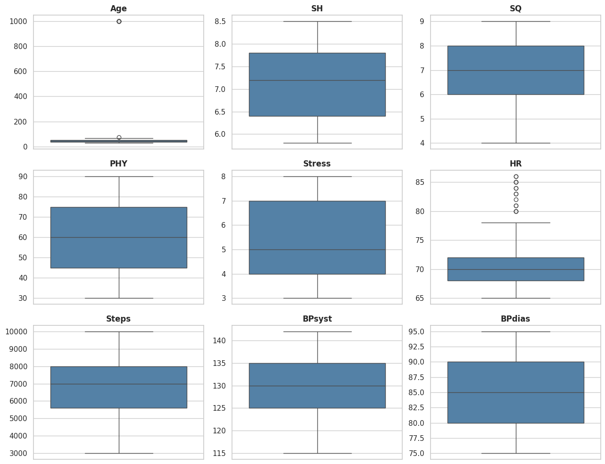

4Práctica: Exploración y preprocesamiento de datos
Autor: Julio Úbeda Quesada · Versión en Python del ejercicio original en R
Este notebook replica, en Python, la actividad de exploración y preprocesamiento sobre un conjunto de datos de salud del sueño y estilo de vida. El dataset contiene variables relacionadas con hábitos de sueño, actividad física, niveles de estrés y otros factores de salud.
El flujo de trabajo cubre: carga y preparación de los datos, normalización de variables categóricas, corrección de inconsistencias en variables cuantitativas, detección y tratamiento de valores erróneos o atípicos, imputación mediante k-vecinos más cercanos (KNN), cálculo e interpretación de correlaciones, y un análisis descriptivo y visual final. El resultado es un archivo de datos procesado, listo para análisis posteriores.
Código
import syssys.path.append("../../src")import pandas as pdimport numpy as npimport matplotlib.pyplot as pltimport seaborn as snsfrom sklearn.impute import KNNImputerfrom scipy.stats import pearsonrfrom stats_toolkit import descriptive as descsns.set_theme(style="whitegrid")pd.set_option("display.max_columns", None)
4.1 1. Preparación del conjunto de datos
4.1.1 1.1. Cargar el archivo de datos
Cargamos el archivo Excel con los datos de salud del sueño y estilo de vida.
Código
df = pd.read_excel("data/sleephealth.xlsx")print(f"El dataset tiene {df.shape[0]} filas y {df.shape[1]} columnas.\n")desc.describe_df(df)
El dataset tiene 374 filas y 13 columnas.
Column
Data Type
Non-null Count
% Null Values
Unique Values
TopCounts
mean
median
std
min
25%
75%
max
0
Person.ID
int64
374
0.00
372
None
187.500000
187.5
108.108717
1.0
94.25
280.75
374.0
1
Gender
str
374
0.00
2
Male (189), Female (185)
NaN
NaN
NaN
NaN
NaN
NaN
NaN
2
Age
float64
371
0.80
34
None
57.840970
43.0
121.153550
27.0
36.00
50.00
999.0
3
Occupation
str
374
0.00
12
Nurse (73), Doctor (71), Engineer (60)
NaN
NaN
NaN
NaN
NaN
NaN
NaN
4
Sleep.Duration
str
374
0.00
29
7.2 (36), 6 (31), 7.8 (27)
NaN
NaN
NaN
NaN
NaN
NaN
NaN
5
Quality.of.Sleep
int64
374
0.00
6
None
7.312834
7.0
1.196956
4.0
6.00
8.00
9.0
6
Physical.Activity.Level
int64
374
0.00
16
None
59.171123
60.0
20.830804
30.0
45.00
75.00
90.0
7
Stress.Level
int64
374
0.00
6
None
5.385027
5.0
1.774526
3.0
4.00
7.00
8.0
8
BMI.Category
str
374
0.00
4
Normal (195), Overweight (148), Normal Weight ...
NaN
NaN
NaN
NaN
NaN
NaN
NaN
9
Blood.Pressure
str
374
0.00
25
130/85 (99), 125/80 (65), 140/95 (65)
NaN
NaN
NaN
NaN
NaN
NaN
NaN
10
Heart.Rate
int64
374
0.00
19
None
70.165775
70.0
4.135676
65.0
68.00
72.00
86.0
11
Daily.Steps
int64
374
0.00
20
None
6816.844920
7000.0
1617.915679
3000.0
5600.00
8000.00
10000.0
12
Sleep.Disorder
str
155
58.56
2
Sleep Apnea (78), Insomnia (77)
NaN
NaN
NaN
NaN
NaN
NaN
NaN
Tras cargar los datos, el DataFrame tiene 374 filas y 13 columnas, coincidiendo con el archivo original.
4.1.2 1.2. Identificación de valores duplicados
El conjunto de datos debería tener un registro por Person.ID; cualquier ID repetido indica un error de captura. Filtramos los ID que aparecen más de una vez:
Se encontraron 3 filas duplicadas según: ['Person.ID'].
Person.ID
Gender
Age
Occupation
Sleep.Duration
Quality.of.Sleep
Physical.Activity.Level
Stress.Level
BMI.Category
Blood.Pressure
Heart.Rate
Daily.Steps
Sleep.Disorder
33
35
Male
31.0
Doctor
6.1
6
30
8
Normal
125/80
72
5000
NaN
34
35
Male
31.0
Doctor
7.7
7
75
6
Normal
120/80
70
8000
NaN
35
35
Male
31.0
Doctor
6.1
6
30
8
Normal
125/80
72
5000
NaN
La presencia de registros con el mismo Person.ID indica duplicados, posiblemente por errores en la captura o consolidación de los datos. En lugar de eliminar información, creamos una columna ID nueva, secuencial y única, y la usamos como identificador definitivo a partir de ahora.
Código
df = df.reset_index(drop=True)df["ID"] = df.index +1# Comprobamos que ahora es único por registroassert df["ID"].is_uniqueprint("El nuevo identificador 'ID' es único para las", len(df), "filas.")
El nuevo identificador 'ID' es único para las 374 filas.
4.1.3 1.3. Identificación de valores vacíos y/o nulos
Revisamos si hay valores nulos (NaN), espacios en blanco o cadenas vacías en cualquier columna.
Código
resumen_cols = desc.describe_df(df)columnas_con_vacios = resumen_cols.loc[resumen_cols["% Null Values"] >0, "Column"].tolist()print("Columnas con valores vacíos o nulos:", columnas_con_vacios)df[columnas_con_vacios].isna().sum()
Columnas con valores vacíos o nulos: ['Age', 'Sleep.Disorder']
Age 3
Sleep.Disorder 219
dtype: int64
Age tiene valores nulos genuinos, y Sleep.Disorder tiene muchos NaN — pero en este caso no son datos perdidos: representan ausencia de trastorno del sueño. Más adelante lo recodificamos explícitamente como la categoría "None".
4.1.4 1.4. Simplificación del nombre de las columnas
Renombramos las columnas para simplificar el código:
Comprobamos si hay espacios en blanco al inicio o al final de los valores categóricos, un error de captura habitual.
Código
cols_con_espacios = [ c for c in cat_colsif df[c].dropna().astype(str).str.contains(r"^\s|\s$").any()]print("Columnas con espacios al inicio/final:", cols_con_espacios if cols_con_espacios else"ninguna")
Columnas con espacios al inicio/final: ninguna
No hay espacios en blanco al inicio o al final en ninguna columna categórica.
4.2.2 2.2. Corrección de tipos de dato
SH (duración del sueño) se cargó como texto porque mezcla el punto y la coma como separador decimal (un problema típico al combinar fuentes con distinta configuración regional). Unificamos al punto decimal y convertimos a float.
Código
print("Tipo de 'SH' antes:", df["SH"].dtype)df["SH"] = df["SH"].astype(str).str.replace(",", ".", regex=False).astype(float)print("Tipo de 'SH' después:", df["SH"].dtype)df["SH"].describe()
Tipo de 'SH' antes: str
Tipo de 'SH' después: float64
count 374.000000
mean 7.132380
std 0.795874
min 5.800000
25% 6.400000
50% 7.200000
75% 7.800000
max 8.500000
Name: SH, dtype: float64
4.2.3 2.3. Estandarización de las categorías
Occupation: unificamos variantes que designan la misma ocupación — "engineer" (minúscula) y "Software Engineer" pasan a "Engineer"; "Sales Representative" pasa a "Salesperson".
Código
print("Antes de normalizar:")desc.unique_categories(df, columns=["Occupation"])df["Occupation"] = df["Occupation"].str.title()df["Occupation"] = df["Occupation"].replace({"Software Engineer": "Engineer","Sales Representative": "Salesperson",})print("Después de normalizar:")desc.unique_categories(df, columns=["Occupation"]);
Antes de normalizar:
'Occupation': ['Accountant', 'Doctor', 'Engineer', 'Lawyer', 'Manager', 'Nurse', 'Sales Representative', 'Salesperson', 'Scientist', 'Software Engineer', 'Teacher', 'engineer']
Después de normalizar:
'Occupation': ['Accountant', 'Doctor', 'Engineer', 'Lawyer', 'Manager', 'Nurse', 'Salesperson', 'Scientist', 'Teacher']
BMI: unificamos "Normal Weight" en "Normal", ya que designan la misma categoría.
Código
print("Antes de normalizar:")desc.unique_categories(df, columns=["BMI"])df["BMI"] = df["BMI"].replace({"Normal Weight": "Normal"})print("Después de normalizar:")desc.unique_categories(df, columns=["BMI"]);
Antes de normalizar:
'BMI': ['Normal', 'Normal Weight', 'Obese', 'Overweight']
Después de normalizar:
'BMI': ['Normal', 'Obese', 'Overweight']
BP (presión arterial) mantiene el formato correcto (XXX/XX) en todos los registros. SD (trastorno del sueño) usa NaN quiere decir “sin trastorno”, así que lo recodificamos de forma explícita como la categoría "None" en lugar de dejarlo como valor perdido:
Confirmamos que no quedan cadenas vacías ("") sin convertir a NaN en ninguna columna.
Código
for c in df.columns:if df[c].dtype ==objector pd.api.types.is_string_dtype(df[c]): df[c] = df[c].replace("", np.nan)print("Columnas con NaN tras la revisión:")print(df.isna().sum()[df.isna().sum() >0])
Columnas con NaN tras la revisión:
Age 3
dtype: int64
4.3.3 3.3. Descomposición de BP en BPsyst y BPdias
BP combina dos medidas (presión sistólica y diastólica) en un único campo de texto con formato "sistólica/diastólica". Lo separamos en dos variables numéricas independientes.
El Person.ID duplicado ya se trató en el apartado 1.2, creando un identificador ID nuevo y único.
4.4.2 4.2. Valores atípicos
Usamos diagramas de caja para inspeccionar visualmente las variables numéricas y detectar outliers.
Código
plot_cols = [c for c in num_cols if c !="ID"] + ["BPsyst", "BPdias"]fig, axes = plt.subplots(3, 3, figsize=(13, 10))for ax, col inzip(axes.flat, plot_cols): sns.boxplot(y=df[col], ax=ax, color="steelblue") ax.set_title(col, fontweight="bold") ax.set_ylabel("")for ax in axes.flat[len(plot_cols):]: ax.axis("off")plt.tight_layout()plt.show()

Se observa un valor atípico extremo en Age, muy por encima del resto de edades — un claro candidato a valor centinela (un código usado para representar “desconocido”, en vez de un dato real). HR muestra algunos valores altos, pero una frecuencia cardíaca en reposo algo por encima de 85 está dentro de la variabilidad fisiológica normal, así que no la tratamos como error. El resto de variables numéricas no muestra outliers destacables.
4.4.3 4.2.1. Manejo de valores atípicos
Para Age, identificamos los valores atípicos aplicando la regla del rango intercuartílico (1.5 × RIC):
Todos corresponden al valor centinela 999 (“edad desconocida”). Lo sustituimos por NaN, el estándar para datos faltantes, de forma que se trate correctamente en los análisis estadísticos y se pueda imputar en el siguiente apartado.
Código
df["Age"] = df["Age"].replace(999, np.nan)print("Valores == 999 restantes:", (df["Age"] ==999).sum())print("Valores NaN en 'Age':", df["Age"].isna().sum())
Valores == 999 restantes: 0
Valores NaN en 'Age': 9
4.5 5. Imputación
Imputamos los NaN de las variables numéricas (excluyendo ID) mediante el método de los k vecinos más cercanos (k = 3): cada valor ausente se sustituye por el promedio del mismo valor en los k registros más parecidos.
Código
impute_cols = [c for c in num_cols if c !="ID"] + ["BPsyst", "BPdias"]imputer = KNNImputer(n_neighbors=3)before_na = df[impute_cols].isna()df_imputed = df.copy()df_imputed[impute_cols] = imputer.fit_transform(df[impute_cols])filas_imputadas = before_na.any(axis=1)df_imputed.loc[filas_imputadas, ["ID"] + impute_cols]
ID
Age
SH
SQ
PHY
Stress
HR
Steps
BPsyst
BPdias
41
42
31.000000
7.7
7.0
75.0
6.0
70.0
8000.0
120.0
80.0
51
52
34.666667
7.5
8.0
45.0
3.0
70.0
8000.0
120.0
80.0
75
76
32.000000
6.0
6.0
30.0
8.0
72.0
5000.0
125.0
80.0
86
87
35.000000
7.2
8.0
60.0
4.0
65.0
5000.0
125.0
80.0
153
154
39.000000
7.2
8.0
60.0
5.0
68.0
8000.0
130.0
85.0
179
180
43.000000
7.8
8.0
90.0
5.0
70.0
8000.0
130.0
85.0
244
245
44.000000
6.3
6.0
45.0
7.0
72.0
6000.0
130.0
85.0
304
305
49.333333
6.1
6.0
90.0
8.0
75.0
10000.0
140.0
95.0
333
334
52.000000
8.4
9.0
30.0
3.0
65.0
5000.0
125.0
80.0
La tabla anterior muestra los registros donde Age ha sido imputado (9 en total: 3 valores nulos originales más 6 que eran el centinela 999), usando el método KNN con \(k=3\).
4.6 6. Correlaciones
4.6.1 6.1. Matriz de correlaciones
Calculamos la correlación de Pearson entre todas las variables numéricas y la visualizamos como un mapa de calor.
Interpretación de las correlaciones más relevantes:
Positivas:
BPsyst y BPdias (≈0.97): presión sistólica y diastólica están, como es fisiológicamente esperable, fuertemente ligadas.
PHY y Steps (≈0.77): más actividad física reportada se traduce en más pasos diarios.
Stress y HR (≈0.67): a mayor estrés, mayor frecuencia cardíaca.
Age con BPsyst/BPdias (≈0.56–0.57): la presión arterial tiende a subir con la edad.
Negativas:
Stress y SQ (≈-0.90) / Stress y SH (≈-0.81): más estrés se asocia con peor calidad y menor duración del sueño — la relación más fuerte de todo el dataset.
HR y SQ (≈-0.66): una frecuencia cardíaca en reposo más alta se asocia con peor calidad de sueño percibida.
4.6.2 6.2. Cálculo manual de la correlación de Pearson
Implementamos la fórmula de Pearson sin usar funciones ya existentes para el cálculo, y validamos el resultado comparándolo con scipy.stats.pearsonr y con DataFrame.corr().
Código
def pearson_manual(x: np.ndarray, y: np.ndarray) ->float: x, y = np.asarray(x, dtype=float), np.asarray(y, dtype=float)if x.shape != y.shape:raiseValueError("x e y deben tener la misma longitud") mask =~(np.isnan(x) | np.isnan(y)) x, y = x[mask], y[mask] mean_x, mean_y = x.mean(), y.mean() num = np.sum((x - mean_x) * (y - mean_y)) den = np.sqrt(np.sum((x - mean_x) **2) * np.sum((y - mean_y) **2))return num / denx = df_imputed["BPsyst"].valuesy = df_imputed["BPdias"].valuesr_manual = pearson_manual(x, y)r_scipy, _ = pearsonr(x, y)r_pandas = df_imputed["BPsyst"].corr(df_imputed["BPdias"])print(f"Correlación manual: {r_manual:.6f}")print(f"Correlación (scipy): {r_scipy:.6f}")print(f"Correlación (pandas): {r_pandas:.6f}")